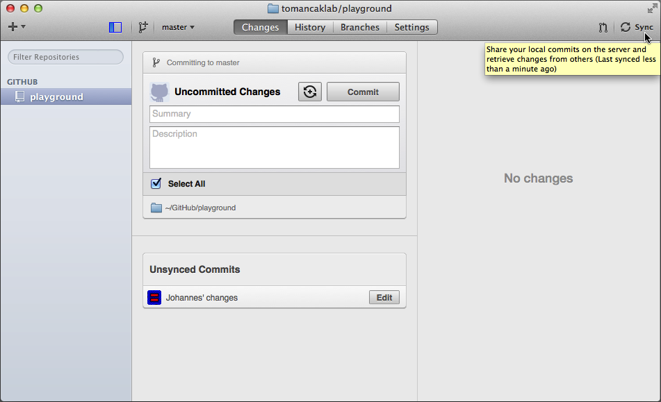
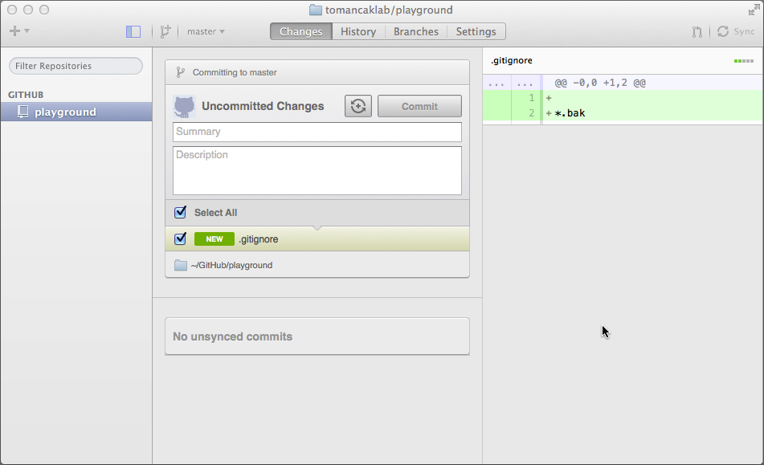

Using Git and GitHub
Like, effectively
Johannes Koenig-Schindelin
Prelude:
Why use a version control system?
?
Common scientific development workflow
- Record an ImageJ macro
- Meeting
- Where was I? Ah, yes: ImageJ macro
- Student needs something
- Change ImageJ macro
- It works no longer?
- WTF?
- ???
- Boohooooo!
Common scientific development workflow, version II
- Coffee
- Make a change to Christopher's R script
- Test
- Make some more changes in the code
- Test
- Send the code to a collaborator
- It no longer works!
- WTF?
- ???
- Boohooooo!
Less common scientific development workflow
- Dig up Michael's old Python script to stitch images
- It works, great!
- Somebody improved it, great!
- Michael actually improved other parts in the meantime!
- How to reconcile?
- ???
- Boohooooo!
Most common development workflow
- Provide a macro to collaborator
- Six months later...
- Get mail saying: your code is broken
- Test verifies: is broken
- Used to work!
- Where is the working version?
- Aargh!
- Boohooooo!
The solution!
- Store "software revisions"
- A revision consists of:
- A collection of files
- An author
- A date
- Usually based on a previous revision
- Share those revisions via GitHub!
Overview
- Getting started
- Diffs
- Commits
- Commit history
- Merges
- Some theory
- Topic branches
- Bisecting
- Forking
- Pull Requests
- GitHub tricks
Getting started
http://git-scm.com/Configuring GitHub 1/3
Configuring GitHub 2/3
Configuring GitHub 3/3

(If you have Windows...)
Cloning a repository 1/2
Cloning a repository
Cloning on the command-line
Christopher, wake up!
$ git clone https://github.com/tomancaklab/playground
Cloning into 'playground'...
remote: Reusing existing pack: 27, done.
remote: Total 27 (delta 0), reused 0 (delta 0)
Unpacking objects: 100% (27/27), done.
Checking connectivity... done.
Accessing the working directory 1/2
Accessing the working directory 2/2
Diffs
diff --git a/anthem.txt b/anthem.txt
new file mode 100644
index 0000000..46ea613
--- /dev/null
+++ b/anthem.txt
@@ -0,0 +1,9 @@
+Lord, grant that Marshal Wade
+May, by thy mighty aid,
+Victory bring!
+
+May he sedition hush
+And, like a torrent, rush
+Rebellious Scots to crush.
+
+God save the King!
Diffs, part II
diff --git a/anthem.txt b/anthem.txt
index 46ea613..d920528 100644
--- a/anthem.txt
+++ b/anthem.txt
@@ -7,3 +7,5 @@ And, like a torrent, rush
Rebellious Scots to crush.
God save the King!
+
+(melody: My country 'tis of thee)
Making a new revision ("committing")
Committing on the command line
$ git status
On branch master
Untracked files:
(use "git add <file>..." to include in what will be committed)
hello.txt
nothing added to commit but untracked files present (use "git add" to track)
$ git add hello.txt
$ git commit
Commit messages
Short summary (50 characters or less)
More detailed explanatory text ("commit message body") after an empty
line, with additional information that cannot be inferred easily from
the diff, e.g. what bug this solves, who reported the issue.
Wrap it to 72 characters per line.
Write your commit message in the imperative: "Fix bug" and not "Fixed
bug" or "Fixes bug." This convention matches up with commit messages
generated by commands like git merge and git revert.
Separate paragraphs with blank lines.
- Bullet points are okay, too
- Typically a hyphen or asterisk is used for the bullet, preceded by a
single space, with blank lines in between, but conventions vary here
- Use a hanging indent
A commit reflects a revision
... that is, a working revision
... i.e. not, never ever "Many changes..."!!! Good example for a bad example: https://github.com/imagej/imagej/commit/ad125915d
... also avoid meaningless commit messages that help nobody, e.g. https://github.com/bigdataviewer/Descriptor_based_registration/commit/cdb21c1b
Synchronizing
Synchronizing on the command line
$ git pull
From https://github.com/tomancaklab/playground
* branch master -> FETCH_HEAD
Auto-merging README.md
CONFLICT (content): Merge conflict in README.md
Automatic merge failed; fix conflicts and then commit the result.
$ git status
On branch master
You have unmerged paths.
(fix conflicts and run "git commit")
Unmerged paths:
(use "git add <file>..." to mark resolution)
both modified: README.md
Dealing with conflicts 1/4
Dealing with conflicts 2/4
Dealing with conflicts 3/4
A closer look at conflict markers
# compress Prairie dataset to ZIP file
echo
echo "Compressing '$datasetFullName' to ZIP..."
if [ -e "$zipPath" ];
then
# ZIP file already exists; skip this dataset
echo "ZIP file already exists. Moving on..."
continue
fi
<<<<<<< HEAD
# make the directory
mkdir -p "${zipDir:-1}"
=======
mkdir -p "$zipDir"
>>>>>>> master
(cd "$datasetBase" && zip -r9 "$zipPath" "$datasetName" > /dev/null)
# delete uncompressed Prairie dataset
echo
echo "Deleting '$datasetFullName'..."
Dealing with conflicts 4/4
Synchronizing (again...)
Synchronizing (again...) on the command line
$ git push Username for 'https://github.com': bugsbunny Password for 'https://dscho@github.com': Counting objects: 5, done. Delta compression using up to 2 threads. Compressing objects: 100% (4/4), done. Writing objects: 100% (5/5), 730 bytes | 0 bytes/s, done. Total 5 (delta 1), reused 0 (delta 0) To github.com:tomancaklab/playground 9388ba5..88bcfa0 HEAD -> master
Looking at the history
Another look at the history: gitk
"Yet another look, via the command-line: git log"
git log
git log -p
git log origin/master
git log bin/
git log -SXmx
git log --author=Christopher
git log -3
git log HEAD^..HEAD^2
Ignoring certain files 1/2
Ignoring certain files 2/2
Some theory
"content-addressable database"
Mahna mahna |
=> | a2a100025d1516bab79163fe862475d7bd010ef8 |
Everything is a content-addressable object, identified by a hash of itself
Everything is an object
- a file is an object
- a directory is a list of files, i.e. an object
- a commit is a top-level directory and a list of parent commits, i.e. an object
Surprising fact: commits do not store changes!
Everything?
Not quite: HEAD is mutable. Mutable things cannot be objects.The commit graph

Starting a topic branch 1/3
Starting a topic branch 2/3
Starting a topic branch 3/3

Topic branches on the command-line
Christopher, this slide is for you again!
$ git checkout -b my-cool-topic origin/master
Switched to a new branch 'my-cool-topic'
...
$ git push origin HEAD
Counting objects: 14, done.
Delta compression using up to 2 threads.
Compressing objects: 100% (6/6), done.
Writing objects: 100% (8/8), 913 bytes | 0 bytes/s, done.
Total 8 (delta 2), reused 0 (delta 0)
To origin
* [new branch] HEAD -> my-cool-topic
Rewriting branchesNever, ever rewrite master
$ git rebase -i origin/master
Successfully rebased and updated refs/heads/my-cool-topic.
$ git push origin +HEAD
Counting objects: 17, done.
Delta compression using up to 2 threads.
Compressing objects: 100% (12/12), done.
Writing objects: 100% (17/17), 12.75 KiB | 0 bytes/s, done.
Total 17 (delta 3), reused 0 (delta 0)
To origin
+ 597967a...deadbeef HEAD^ -> my-cool-topic (forced update)
"Interactive rebase"
pick c5ad950 Insert a comment pick 1253d09 Fix typo pick dbf553c Add support for XYZ # Rebase 152ebdc..dbf553c onto 152ebdc # # Commands: # p, pick = use commit # r, reword = use commit, but edit the commit message # e, edit = use commit, but stop for amending # s, squash = use commit, but meld into previous commit # f, fixup = like "squash", but discard this commit's log message # x, exec = run command (the rest of the line) using shell
Fixup commits
$ git add bin/
$ git commit --fixup HEAD^^
[master b6c875c] fixup! Insert a comment
1 file changed, 1 insertion(+)
Merging topic branches ("Pull Requests")
Being a good netizen: "Patches welcome"

Bisecting
$ git bisect start
$ git bisect bad HEAD
$ git bisect good HEAD@{1.day.ago}
... test ...
$ git bisect good
... test ...
$ git bisect bad
... rinse and repeat ...
... find out bad commit ...
$ git bisect reset
Forking

Network

GitHub tricks
-
Looking at individual commits:
https://github.com/tomancaklab/playground/commit/HEAD^ -
Looking at topic branches:
https://github.com/tomancaklab/playground/compare/master...tutorial - 't'
- Click on line numbers
- 'y'
- '?'
- ... more on the GitHub Tricks page on the Fiji wiki
README.md
https://help.github.com/articles/github-flavored-markdowngh-pages
See e.g. http://scijava.github.io/, backed by https://github.com/scijava/scijava.github.com.Thank you!
ImageJ2/Fiji team
(original authors of this workshop):